1 Zig-Zag サンプラー
区分確定的 Makrov 過程を用いた，連続時間 MCMC 手法の１つ
A Blog Entry on Bayesian Computation by an Applied Mathematician
$$
$$
1.1 Zig-Zag サンプラー
- PDMP または 連続時間 MCMC と呼ばれる手法群の一つ
- ランダムな時刻にランダムな動きをする以外は，確定的な動き
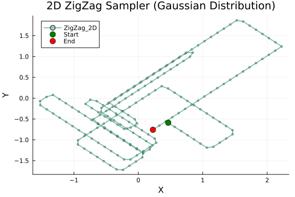
1.2 PDMP による MCMC / 連続時間 MCMC
PDMP （Piecewise Deterministic Markov Process，区分確定的マルコフ過程）
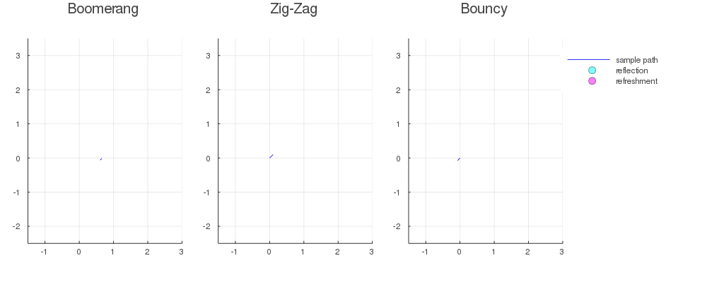
今回は Zig-Zag サンプラー（中央）に注目する．
1.3 PDMP / 連続時間 MCMC の美点１
- 正確なシミュレーションが可能な連続過程である．
- シミュレーションが簡単で，次の２つだけ考えれば良い：
- ランダムな時刻 （非一様 Poisson 点過程）
- ランダムな変化 （Zig-Zag の場合はこれも無し）
1.4 PDMP / 連続時間 MCMC の美点２
- 軌跡自体が目標分布 \pi に従う
- 軌跡上で線積分する or 好きな間隔で切り出してサンプルとする
- 非対称 Metropolis-Hastings 法の scaling limit として導かれる
- Zig-Zag は Curie-Weiss 模型の Lifted MH 法から (Bierkens and Roberts, 2017)
- BPS は分子動力学法の模型から (Peters and de With, 2012)
1.5 PDMP / 連続時間 MCMC の美点３
シミュレーションが簡単（本節の残りで解説）
PDMP：離散化誤差なしで簡単にシミュレーションできる稀有な連続過程
ダイナミクスが良い（第 4 節）
前スライドで見た通り，非対称なダイナミクスが作れる
スケーラブルなサンプリング手法（第 2 節）
全データにアクセスする必要はなく，一部で良い（サブサンプリング）
バイアスが入らないサブサンプリングが可能 (Bierkens, Fearnhead, et al., 2019)
1.6 Zig-Zag 過程の定義
すなわち，(x,\theta)\in E から出発する Zig-Zag 過程は，次の微分方程式系で定まる決定論的なフロー \phi_{(x,\theta)}:\mathbb{R}\to\mathbb{R}^d に従って運動する粒子とみなせる： \frac{d \phi_{(x,\theta)}(t)}{d t}=\theta,\qquad \frac{d \Theta_t}{d t}=0.
1.7 Zig-Zag 過程のシミュレーション
1.8 レート関数 \lambda_i の設定
あとはエルゴード性が成り立てば，\pi に対する MCMC として使える．
1.9 Zig-Zag 過程のエルゴード性
\pi(x)\,\propto\,e^{-U(x)}\le C'\lvert x\rvert^c,\qquad C'>0, ということだから，ほとんどの場合成り立つ．
1.10 リフレッシュ動作 \gamma_i の意味
\lambda_i(x,\theta)=\biggr(\theta_i\partial_iU(x)\biggl)_++\gamma_i(x,\theta_{-i})
- \gamma_i は \theta_i に依らず，成分 \theta_i を変化させる頻度を定める．
- \gamma_i\equiv0 と取った方が，Monte Carlo 推定量の漸近分散は最小になる (Andrieu and Livingstone, 2021)
- \gamma_i だけの自由度があることが，Zig-Zag サンプラーのスケーラビリティを支えている（次節 2 参照）
1.11 到着時刻 T_j のシミュレーション
しかしこの方法は，m_i が多項式の場合しか使えない．
1.12 剪定 (Lewis and Shedler, 1979 Poisson thinning)
Zig-Zag 過程のシミュレーションの問題は，強度関数 m_i(t)=\lambda_i(x+t\theta,\theta)=\biggr(\theta_i\partial_iU(x+t\theta)\biggl)_++\gamma_i(x+t\theta,\theta_{-i}) の多項式による上界 M_i を見つける問題に帰着される．
2 大規模データに対するベイズ推論
Zig-Zag サンプラーは，不偏なサブサンプリングにより，スケーラブルな Monte Carlo 法として使える．
2.1 従来の MCMC は大規模データに弱い．
Metropolis-Hastings 法
採択-棄却のステップでは，毎度全データにアクセスする必要があり，計算量が大きい．
データの一部のみを使って尤度を不変推定する2
目標分布に収束しなくなる（バイアスが導入される）
MCMC を使う利点が失われる
2.2 大規模データに対する２つのアプローチ
1. Devide-and-conquer
データを小さなチャンクに分割し，それぞれで MCMC を回し，あとから結果を総合する．
| 不偏性 | 手法名 | 提案文献 |
|---|---|---|
| WASP | (Srivastava et al., 2015) | |
| Consensus Monte Carlo | (Scott et al., 2016) | |
| Monte Carlo Fusion | (Dai et al., 2019) |
2.3 大規模データに対する２つのアプローチ
2. Subsampling
尤度評価（全データが必要）を，リサンプリングに基づく不偏推定量で代用する．
| 不偏性 | 手法名 | 提案文献 |
|---|---|---|
| Stochastic Gadient MCMC | (Welling and Teh, 2011) | |
| Zig-Zag with Subsampling | (Bierkens, Fearnhead, et al., 2019) | |
| Stochastic Gradient PDMP | (Fearnhead et al., 2024) |
2.4 Zig-Zag サンプラーではバイアスを導入しないサブサンプリングが可能
Zig-Zag サンプラーは，ジャンプ強度で尤度の情報を使う：U=-\log\pi \lambda_i(x,\theta)=\biggr(\theta_i\partial_iU(x)\biggl)_++\gamma_i(x,\theta_{-i}),\qquad i\in[d], 仮に，単一のサンプル k\in[n] から計算できる量 E_k^1(x) に関して \partial_iU(x)=\frac{1}{n}\sum_{k=1}^nE_i^k(x) が成り立つ場合，\partial_iU(x) を，[n]:=\{1,\cdots,n\} 上の一様サンプル K を用いて E_i^K(x),\qquad K\sim\mathrm{U}([n]) で不偏推定できる．
2.5 ZZ-SS (Zig-Zag Sampler with Sub-Sampling)
Bayes 推論の文脈では，負の対数尤度 U(x)=-\log\pi(x|\boldsymbol{y}) は U(x)=-\sum_{k=1}^n\log p(y_k|x)-\log p(x),\qquad\pi(x)\,\propto\,\left(\prod_{k=1}^np(y_k|x)\right)p(x), という表示を持つ．p(x) は事前分布，y_1,\cdots,y_k がデータ． E_i^k(x):=\frac{\partial }{\partial x_i}\biggr(-n\log p(y_k|x)-\log p(x)\biggl) と定めると， \partial_iU(x)=\mathbb{E}[E_i^K(x)]\qquad K\sim\mathrm{U}([n]).
2.6 ZZ-SS (Zig-Zag Sampler with Sub-Sampling)
そこで，ランダムに定まる強度関数 m^K_i(t):=\biggr(\theta\cdot E^K_i(x+\theta t)\biggl)_+,\qquad K\sim\mathrm{U}([n]), を用いて Zig-Zag 過程をシミュレーションすることを考える．
ただし， m_i^k(t)\le M_i(t) を満たす上界 M_i が存在すると仮定する．
2.7 ZZ-SS (Zig-Zag Sampler with Sub-Sampling)
2.8 ZZ-SS (Zig-Zag Sampler with Sub-Sampling)
2.9 上界 M_i をどう見つけるか？
ランダムに定まる強度関数 m^K_i(t):=\biggr(\theta_iE^K_i(x+\theta t)\biggl)_+ に対して， \max_{k\in[n]}m^k_i(t)\le M_i(t) を満たす多項式関数 M_i を見つけないと，剪定ができず，事実上シミュレーションが不可能．
また，タイトな上界でないと，ほとんどの提案が棄却され，無駄な計算量が増してしまう．
2.10 ZZ-CV (Zig-Zag Sampler with Control Variates)
2.11 ZZ-CV (Zig-Zag Sampler with Control Variates)
事前処理により，事後最頻値 \widehat{x} に十分近いように参照点 x_* を選ぶ
その後は データのサイズに依存しない O(1) 計算複雑性で事後分布からの正確なサンプリングが可能
この２つはいずれも O(n) の複雑性で実行できる．
2.12 例：正規標本の平均推定
データは１次元で，分散 \sigma^2 が既知な正規分布に従うとする： Y^j\overset{\text{i.i.d.}}{\sim}\mathrm{N}(x_0,\sigma^2),\qquad j\in[n]. 事前分布を \mathrm{N}(0,\rho^2) とすると，定数の違いを除いて \begin{align*} U'(x)&=\frac{x}{\rho^2}+\frac{1}{\sigma^2}\sum_{j=1}^n(x-y^j)=\frac{x}{\rho^2}+\frac{n}{\sigma^2}(x-\overline{y}), \end{align*} であるから，U' は非有界であり，簡単な上界が見つからない．しかし， U''(x)=\frac{1}{\rho^2}+\frac{n}{\sigma^2}. は有界だから，U' は \|U''\|_\infty を Lipschitz 定数として Lipscthiz 連続である．
2.13 数値実験：ZZ（サブサンプリングなし）と ZZ-CV（制御変数を用いたサブサンプリング）の比較
同じ長さの軌跡＋同数のサンプルを用いて，事後平均推定量により x_0 を推定した場合の平均自乗誤差は次の通り：
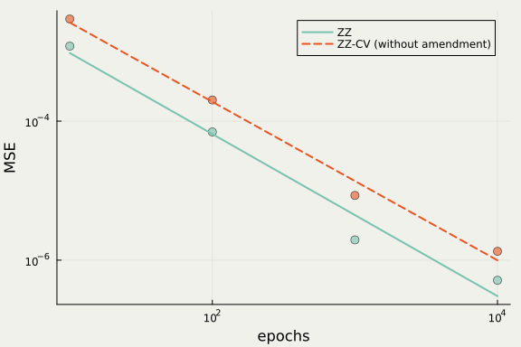
2.14 数値実験：ZZ と ZZ-CV の比較
単位計算量 (epoch)：「データ n を通じた勾配の計算」を１単位とする
揃えて比較すると，たしかに効率が改善されている：
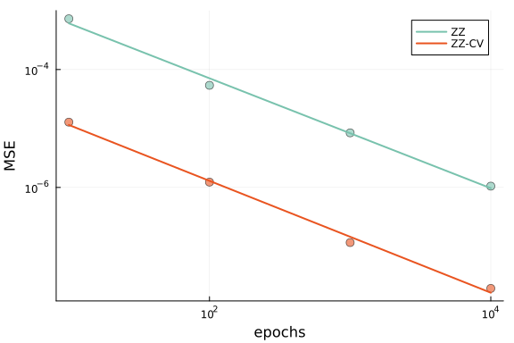
2.15 ZZ-CV がうまくいく理由
データ数 n\to\infty の極限で，事後分布は最頻値 \widehat{x} の周りに集中するため
事前処理により参照点 x_* を \|x_*-\widehat{x}\|_p=O(n^{-1/2})\quad(n\to\infty) 程度の正確性で得られたならば， \|x-x_*\|_p=O_p(n^{-1/2}),\quad\partial_iU(x_*)=O_p(n^{1/2})\quad(n\to\infty) が成り立つ．このことより， M_i(t)=a_i+b_it=O_p(n^{1/2})\quad(n\to\infty) であるが，Zig-Zag 過程は O(n^{-1/2}) のタイムステップで区切って独立なサンプルとみなせるため，総じて独立なサンプルを得るための計算量は O(1)．
3 ロジスティック回帰と大規模不均衡データの問題
不均衡データに対する Gibbs サンプラーは収束が無際限に遅くなるが，Zig-Zag サンプラーでは簡単なトリックで克服できる．
3.1 ロジスティック回帰
\operatorname{P}[Y=1\,|\,X,\xi]=\frac{1}{1+\exp(-X^\top\xi)}
の，事前分布 p_0(\xi)d\xi とデータ \{(x^i,y^i)\}_{i=1}^n に対する事後分布 \pi は次のように表せる：
\pi(\xi)\,\propto\,p_0(\xi)\prod_{i=1}^n\frac{\exp(y^i(x^i)^\top\xi)}{1+\exp((x^i)^\top\xi)}.
\pi は正規分布の Pólya-Gamma 複合としての構造を持つ
データ拡張による Gibbs サンプラー (Polson et al., 2013) によりサンプリング可能．
3.2 ロジットモデルはポテンシャルの勾配が有界になる
\begin{align*} U(\xi)&:=-\log p_0(\xi)-\sum_{i=1}^n\log\left(\frac{\exp(y^i(x^i)^\top\xi)}{1+\exp((x^i)^\top\xi)}\right)=:U_0(\xi)+U_1(\xi) \end{align*}
U_1(\xi)=\frac{1}{n}\sum_{j=1}^nU^j_1(\xi),\qquad U_1^j(\xi)=-n\log\left(\frac{\exp\left(y^j(x^j)^\top\xi\right)}{1+\exp\left((x^j)^\top\xi\right)}\right), \partial_iU^j_1(\xi)=n\frac{x^j_i\exp\left((x^j)^\top\xi\right)}{1+\exp\left((x^j)^\top\xi\right)}-ny^jx^j_i<nx^j_i(1-y^j). \therefore\qquad\lvert\partial_iU^j_1(\xi)\rvert\le n\max_{j\in[n]}\lvert x^j_i\rvert\qquad i\in[d].
3.3 Poisson 剪定のための上界
- 前スライドの評価 \lvert\partial_iU^j_1(\xi)\rvert\le n\max_{j\in[n]}\lvert x^j_i\rvert を通じて，定数のバウンド m_i(t)=\biggr(\theta_i\partial_iU(\xi+\theta_it)\biggl)_+\le\left(n\theta_i\max_{j\in[n]}\lvert x^j_i\rvert\right)_+\equiv:M_i によって Poisson 剪定をする ZZ (Global bound)．
- 事後分布の最頻値周りへの集中を通じた，m_i の１次関数によるバウンド M_i(t):=a_i+b_it,\qquad a_i:=(\theta_i\partial_iU(\xi_*))_++C_i\lvert\xi-\xi_*\rvert, b_i:=C_i\sqrt{d},\qquad C_i:=\frac{n}{4}\max_{j\in[n]}\lvert x^j_i\rvert\lvert x^j\rvert. によって Poisson 剪定をすることも可能である ZZ (Affine bound)．
同じ上界を用いたサブサンプリング ZZ-SS と ZZ-CV も考えられる．
3.4 性能比較
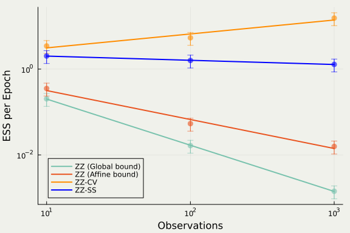
3.5 有効サンプル数について
Zig-Zag 過程 (Z_t)_{t\in[0,T]} から B 個のサンプル X_1,\cdots,X_B を生成して，関数 h\in\mathcal{L}^2(\pi) の期待値 \displaystyle(\pi|h)=\int_0^Th(x)\,\pi(dx) を推定したとする．この際 \widehat{\operatorname{ESS}}:=T\frac{\widehat{\mathrm{V}_\pi[h]}}{\widehat{\sigma^2_h}} \widehat{\mathrm{V}_\pi[h]}:=\frac{1}{T}\int^T_0h(X_s)^2\,ds-\left(\frac{1}{T}\int^T_0h(X_s)\,ds\right)^2, \widehat{\sigma^2_h}:=\frac{1}{B-1}\sum_{i=1}^B(Y_i-\overline{Y})^2,\qquad Y_i:=\sqrt{\frac{B}{T}}\int^{\frac{iT}{B}}_{\frac{(i-1)T}{B}}h(X_s)\,ds. によって推定できる．
3.6 ロジスティック回帰における「大規模不均衡データ」の問題
ロジスティック回帰において， \sum_{j=1}^ny^j\ll n が成り立つ状況下では，Pólya-Gamma 複合に基づく Gibbs サンプラーの収束が，n\to\infty の極限で際限なく遅くなる．
これは事後分布が最頻値の周りに集中する速度が，不均衡な n\to\infty 極限では変化するためである．
3.7 「大規模不均衡データ」に対する Gibbs サンプラーの失敗
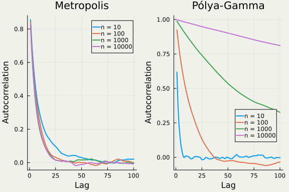
3.8 「大規模不均衡データ」に対する Gibbs サンプラーの失敗

3.9 「大規模不均衡データ」に対する Gibbs サンプラーの失敗
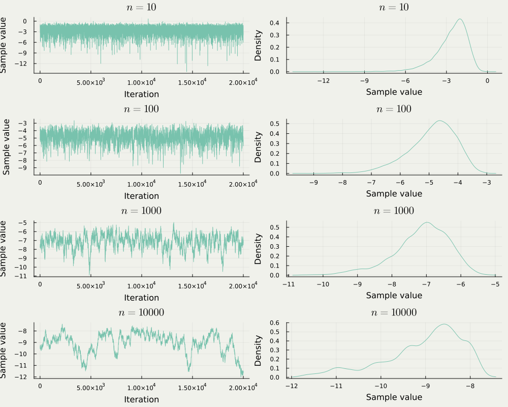
3.10 不均衡極限では測度の集中レートが違う (Johndrow et al., 2019)
| 通常の極限 | 不均衡極限 | |
|---|---|---|
| 事後分布 | n^{-1/2} | (\log n)^{-1} |
| 提案分布 | n^{-1/2} | n^{-1/2} |
\sum_{i=1}^ny^i=1,\qquad n\to\infty, の「不均衡極限」または Infinitely Imbalanced Limit (Owen, 2007) において，集中のオーダーが変わってしまう．
3.11 事後分布の集中不足の影響
Pólya-Gamma 複合に基づく Gibbs サンプラー
提案のステップサイズが，事後分布のスケールに比べて小さすぎる．
制御変数に基づく Zig-Zag サンプラー (ZZ-CV)
レート関数 m_i の上界 M_i の評価がズレることで効率が下がっていく．
後者は単に M_i の設計不良の問題で，挽回可能！3
3.12 重点サブサンプリング (Sen et al., 2020)
サブサンプリングによりランダム化された強度関数 m_i^K(t)=\biggr(\theta_iE^K_i(x+\theta t)\biggl)_+ は，真の勾配 \partial_iU(\xi) に対する不偏性 \mathbb{E}\biggl[E^K_i(\xi)\biggr]=\partial_iU(\xi) を満たす限り，一様なサブサンプリング K\sim\mathrm{U}([n]) に限る必要はなかったのである．
3.13 重点サブサンプリング (Sen et al., 2020)
(p_x) をある [n] 上の分布 \nu\in\mathcal{P}([n]) の質量関数として E^j_i(\xi):=\frac{1}{p_j}\partial_iU^j(\xi)\qquad j\in[n] と定めると， \partial_iU(\xi)=\sum_{j=1}^np_jE_i^j(\xi)=\mathbb{E}[E_i^J]. このリスケーリングした勾配の推定量 E_i^1,\cdots,E_i^n に対して，大域的な上界は \lvert E_i^j(\xi)\rvert\le\max_{j\in[n]}\frac{\lvert x_i^j\rvert}{p_j} に変わる．以前の評価 \displaystyle\partial_iU^j\le n\max_{j\in[n]}\lvert x^j_i\rvert (3.2) は，p_j\equiv1/n の場合に当たる．
3.14 重点サブサンプリング (Sen et al., 2020)
この一般化により， \lvert E_i^j(\xi)\rvert\le\max_{j\in[n]}\frac{\lvert x_i^j\rvert}{p_j} の右辺を確率分布 \nu=(p_j)\in\mathcal{P}([n]) に関して最適化することで，ZZ-SS よりタイトな上界を得る．具体的には p_j\,\propto\,\lvert x^j_i\rvert と取れば良い (ZZ-IS)．
3.15 性能比較（通常のデータの場合）
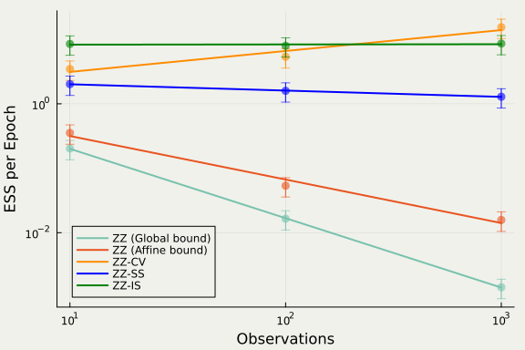
3.16 「大規模不均衡データ」に対する Zig-Zag サンプラー
\xi_0=1 を真値とし，次のように生成した１次元データを考える： X^j\overset{\text{i.i.d.}}{\sim}(1-\alpha)\delta_0+\alpha\mathrm{N}(1,2), \mathbb{P}[Y^j=1]=\frac{1}{1+e^{-X^j}}.
3.17 「大規模不均衡データ」に対する Zig-Zag サンプラー
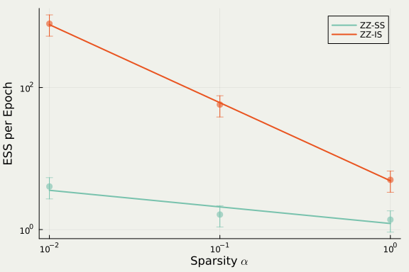
\alpha が小さい領域で ZZ-IS の効率が上がっていることは，\partial_iV^j_i(\xi)=0 の場合は上界も 0 になり，そもそも提案もされないため，スパースになるほど効率が上がるためだと思われる．
4 ダイナミクスとエルゴード性
拡散様の振る舞い (diffusive behaviour) がないために，従来法より収束レートが改善する．
4.1 Zig-Zag サンプラーがうまく行った理由
従来法に比べ，
確定的な動きが対称性を壊す
状態空間のより効率的な探索が可能．
バイアスのない部分サンプリングが可能
p そのものではなく，\partial_i\log p の値のみ使うため．
効率的な Poisson 剪定アルゴリズムさえ見つかれば，（理論的には）どんな U=-\log\pi に対しても効率的な実行が可能
２を今まで詳しく見てきた．本節では１を考察する．
4.2 連続かつ非対称なダイナミクス
対象分布：標準 Cauchy 分布 f(x)=\frac{1}{\pi\sigma}\frac{1}{1+\left(\frac{x-\mu}{\sigma}\right)^2}
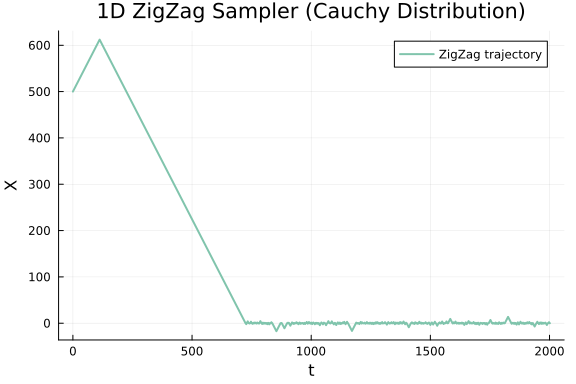
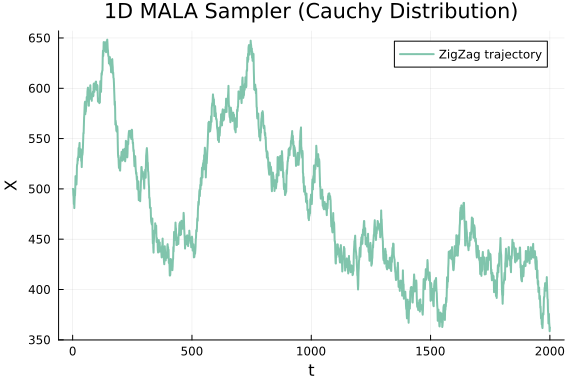
4.3 忘却：エルゴード性の必要条件
忘却＝スタート地点をすぐに忘れるかどうか： \|P^t(x,-)-P^t(y,-)\|_\mathrm{TV}\xrightarrow{t\to\infty}0.
Diffusive Behaviour
4.4 t-分布に対する収束レート
自由度 \nu の t-分布 \mathrm{t}(\nu) に対して，
Zig-Zag Sampler (Giorgos Vasdekis and Roberts, 2022) \left\|P^t\left((x,\theta),-\right)-\mathrm{t}(\nu)\right\|_\mathrm{TV}\le\frac{C_1V_1(x)}{t^k},\qquad k<\nu.
Metropolis-adjusted Langevin Algorithm (Jarner and Tweedie, 2003) \left\|P^t\left(x,-\right)-\mathrm{t}(\nu)\right\|_\mathrm{TV}\le\frac{C_2V_2(x)}{t^k},\qquad k<\frac{\nu}{2}. 参考：\mathrm{t}(\nu)\Rightarrow\mathrm{N}(0,1)\;(\nu\to\infty)．
4.5 Zig-Zag 過程の特徴付け
この E' 上の点過程上で，次の確率核 Q に従ってジャンプするとみれる： Q((x,\theta),-):=\sum_{i=1}^d\frac{\lambda_i(x,\theta)}{\lambda(x,\theta)}\delta_{(x,F_i(\theta))}(-)
4.6 数学的な見通しの良さ
この定式化の下では，(Davis, 1993) により 拡張生成作用素の形 が一般的な設定で調べられている：C^1(E)\subset\mathcal{D}(\widehat{L}) かつ \widehat{L}f(x,\theta)=\theta\cdot D_xf(x,\theta)+\lambda(x,\theta)\biggr(f(x,-\theta)-f(x,\theta)\biggl).
拡散項がジャンプ項になっただけで，従来の MCMC の解析に用いたエルゴード定理がそのまま使える．
4.7 指数エルゴード性
\pi の分布の裾が指数よりも重い場合などは条件１を満たさない．
例 ： \displaystyle\qquad\quad U(x)=x^\alpha\qquad(0<\alpha<1)
4.8 対象分布の裾が重いと指数エルゴード性が破れる
たとえば A を半径 t\sqrt{d} の閉球 B_{t\sqrt{d}} の補集合 B_{t\sqrt{d}}^\complement と取ると，時刻 t に B_{t\sqrt{d}}^\complement に到着する確率は 0 だから， \left\|P^t\left((x,\theta),-\right)-\pi\right\|_\mathrm{TV}\ge\pi(B_{t\sqrt{d}}^\complement),\qquad t\ge0. \pi の裾確率が指数よりも遅い場合，これは指数エルゴード性に矛盾する．
5 まとめと展望
ダイナミクス
多様な動きを取り入れることで，高次元における収束を加速する- Boomerang Sampler (Bierkens et al., 2020)
- SUZZ (Speed-Up Zig-Zag) (G. Vasdekis and Roberts, 2023)
シミュレーション
Poisson 剪定さえ効率的に出来れば実行可能
一般的な処方箋を求める方向に研究が進んでいる- Automatic Zig-Zag (Corbella et al., 2022)
- Concave-Convex PDMP (Sutton and Fearnhead, 2023)
- NuZZ (Numerical Zig-Zag) (Pagani et al., 2024)
参考文献
関連ページ
Footnotes
Citation
@unpublished{2024,
author = {, 司馬博文},
title = {Zig-Zag {サンプラー}},
date = {2024-07-25},
url = {https://162348.github.io/posts/2024/Slides/ZigZagSampler.html},
langid = {en},
abstract = {本郷キャンパス小島ホール第二セミナー室．
スライドは{[}こちら{]}(https://162348.github.io/posts/2024/Computation/ZigZagSampler\_Slides.html)．}
}